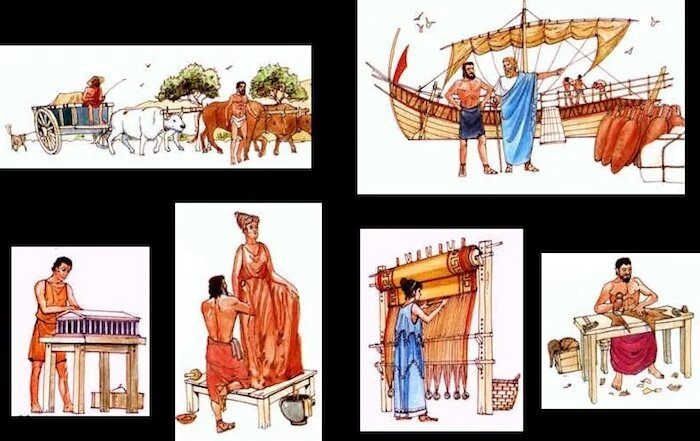

What was ancient Greece
Ancient Greece, the birthplace of democracy, was the source of some of the greatest literature, architecture,
science and philosophy in Western civilization, and home to beautiful historical sites like the Acropolis and the Parthenon.
The Ancient Greece we think of existed from 800 BC to 146 BC.
There are 3 main periods in ancient Greek history, Archaic period, 800–490 BC. Classical period, 490–323 BC. Hellenistic period, 323–146 BC.
The Greeks made important contributions to philosophy, mathematics, astronomy, and medicine.
Literature and theatre was an important aspect of Greek culture and influenced modern drama.
The Greeks were known for their sophisticated sculpture and architecture.
Greek culture influenced the Roman Empire and many other civilizations, and it continues to influence modern cultures today.
Location of Greece
Located in southern Europe, Greece is made up of the mainland and hundreds of small islands spread throughout the Ioanian, Aegean, and Mediterranean Seas.
As a peninsula, the people of Greece took advantage of living by the sea.
The Greeks, like many other ancient civilizations, felt deeply connected to the land they lived on.
While living on the land helped to develop a strong sense of pride in their country,
the distance between the islands and the mountains did not help to support unity in Greece.
The Minoans and Mycenaeans of ancient Greece used their geography to their advantage.
The Greek mainland is approximately 80% mountains, which allowed the city-states to develop independently of each other.
The eastern part of Greece is sloping hills that allow agriculture to grow in this region. The western region of Greece was mainly Islands.
With Greece being surrounded by the sea on 3 sides, the people would use this to their advantage and set up trades routes between cities,
they became good mariners.

Farmers
There was several different types of work in ancient Greece,
Farming was an important part of life in Greece. Agriculture was the main source of income for ancient Greeks. The majority of the population were farmers
. Most of the population lived in the countryside. Farmers would work the fields and tend to their crops. The most common crops were olives, grain and grapes.
They also raised animals such as sheep, goats and pigs.
Artisans
Artisans were skilled cratsman usually trained by a master craftsmen. They would
work in workshops or in their own homes. They were respected and often achieved a certain
level of wealth and social status. They produced goods such as:
- Pottery
- Metalwork
- textiles
Pottery
Pottery was one of the most significant art forms in ancient Greece. Greek Pottery was
known for its high quality and was exported throughout the mediterranean. Potters were skilled craftspeople
who produced a wide range of vessels, such as vases, jars, and plates, using a variety of techniques.
MetalWorking
Metalworking was a very important craft in ancient Greece. metal workers produced many goods such as
jewelry, tools and weapons. They were able to creat beautiful intricate objects.
Textiles
textile production was considered a very important craft. Women were particularly associated with this craft.
They would spin and weave wool and linen to make clothes blankets and many other things.